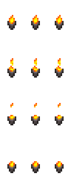
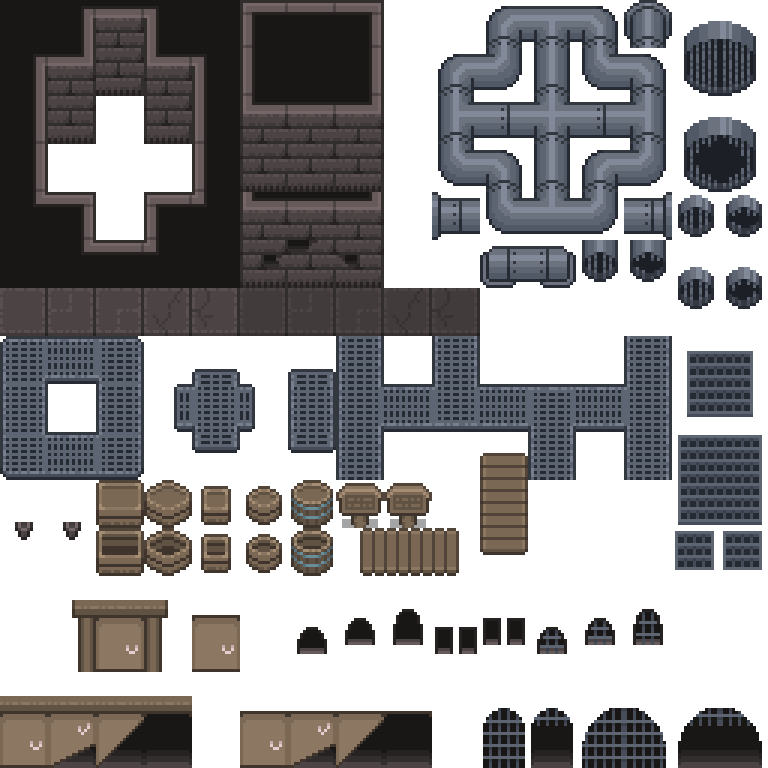
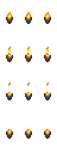
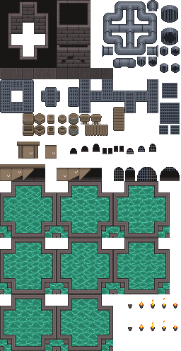

sewers-torch-source-4af4b0887b03.pngShow destination
top-down/native/sewers-tileset/rpg-maker-mv/characters/sewers-torch-source-4af4b0887b03.png# Sewers Tileset.zip - Asset Descriptions This archive is a small pixel-art sewer and underground tileset focused on stone walls, pipes, wood, doors, grates, and animated water and torch tiles. ## Tilesets - sewers_tiles.png: complete sewer tileset containing: - grey and dark brick walls with interior and exterior faces, - metal pipes, valves, junctions, and connecting pieces, - brown wood planks, crates, and barrels, - brown wooden doors with round metal handles, - metal floor grates and dark grate walls, - large green animated water tiles for pools and rivers, - small torch sprites with flame animations. ## RPG Maker Variants - RPG Maker MV/characters/!Sewers_Torch.png: animated torch for RPG Maker MV characters layer. - RPG Maker MV/tilesets/rm_sewers_B.png: prebuilt RPG Maker MV tileset in 512x512 layout. - RPG Maker VX folder contains equivalent `characters` and `tilesets` builds. ## License - License.txt included in the root of the archive. This archive contains environment tiles and props only. It does not include any character, hero, monster, or creature sprites.

sewers-torch-source-4af4b0887b03.pngtop-down/native/sewers-tileset/rpg-maker-mv/characters/sewers-torch-source-4af4b0887b03.png
rm-sewers-b-source-134df822313e.pngtop-down/native/sewers-tileset/rpg-maker-mv/tilesets/rm-sewers-b-source-134df822313e.png
sewers-torch-source-4d4801dcb7ba.pngtop-down/native/sewers-tileset/rpg-maker-vx/characters/sewers-torch-source-4d4801dcb7ba.pngrm-sewers-b-source-412d97462bc5.pngtop-down/native/sewers-tileset/rpg-maker-vx/tilesets/rm-sewers-b-source-412d97462bc5.png
sewers-tiles-source-b27509108a85.pngtop-down/native/sewers-tileset/sewers-tileset/tilesets/sewers-tiles-source-b27509108a85.pngcomplete sewer tileset containing: